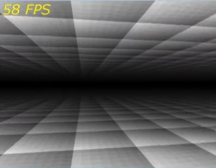
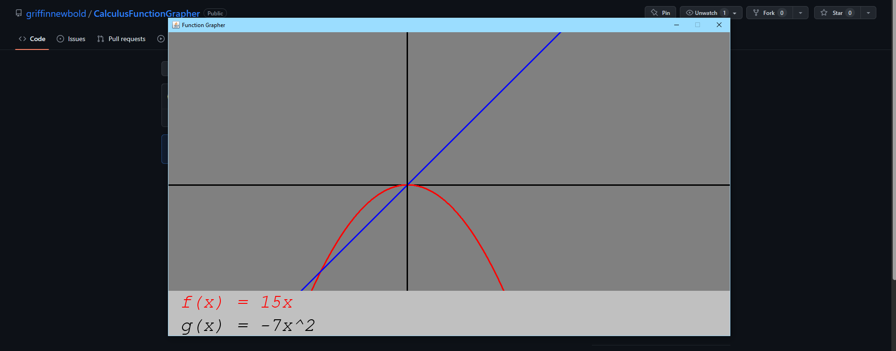
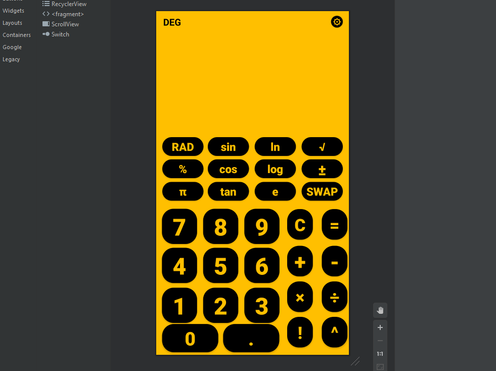
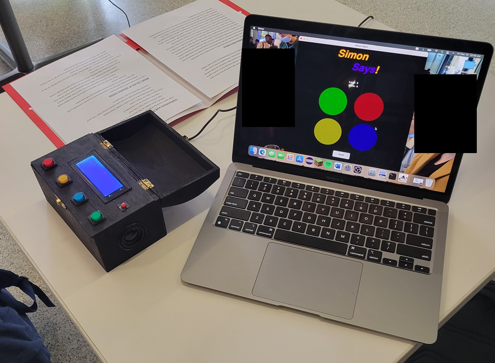
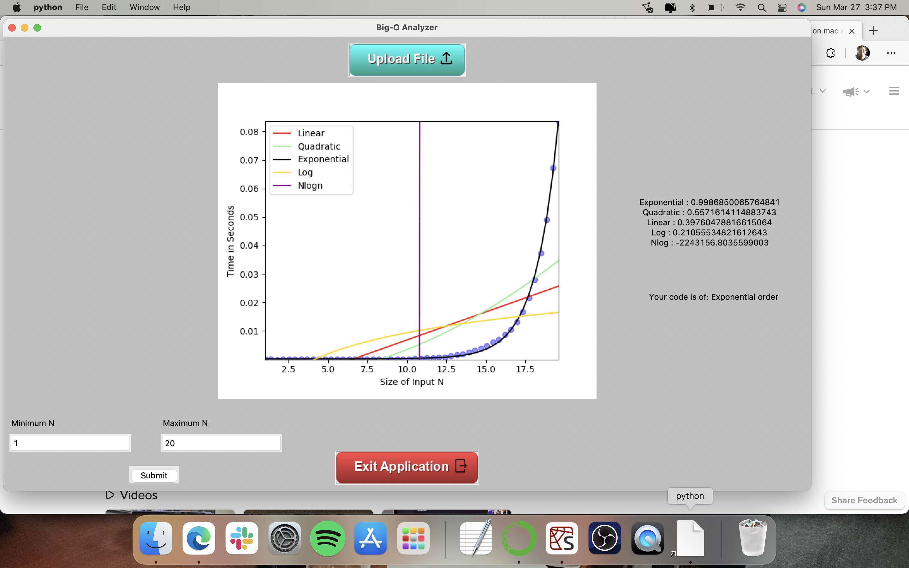

Griffin Newbold
Fourth Year Undergraduate at Columbia University
Head Teaching Assistant and Projects Student for Professor Gail Kaiser
Former Teaching Assistant for Professor Adam Cannon
Software Engineering Intern @ Capital One
Located in New York, New York
Welcome to my project portfolio! This will be an expansive display and overview of all the projects that I felt were significant in my journey as a developer, some projects may contain accompanying graphics if the requesite code is no longer available for whatever reason (This is mainly due to me being in High school not knowing what GitHub was). The projects will be presented in effective chronological order. This means if you desire to see my latest projects first then click the previous button rather than next. Thank You!
Project 1: HTML Party Games
Developed in Late 2017/Early 2018
Technologies Used: HTML/CSS/JavaScript
One of the first things I (and in the case of Pong someone else) developed. My first introductory course in high school began by teaching HTML, CSS, and JavaScript, the course
curriculum was self-paced with the only deadline being the end of the semester so whenever I had free time I developed these classic games, one of which I used as a project grade
for the course. The following games were developed:
1.) Pong
2.) Memory Game
3.) Tetris
To my surprise these sites are actually still being hosted even after 6 years. I went and loaded up the sites and transfered the code to their own separate GitHub repos but if you click
on any of the names it will take you to a page to play the game on my site right now! The repos maintain a complete replica of the original code, while these versions are slightly altered
in order to comply with the nature of the site. This means that under the more tab in the top right, "Go Home" takes you back to the landing page of this site while other links do nothing now.
Project 2: Rudimentary 3D Game Engine
Developed in Late 2018
Technologies Used: Eclipse IDE, Java SE 6, and JavaX Related Libraries
After concluding my first year of programming courses in high school, as a young student who absolutely loved to play
video games, I decided to try my hand at making something close to what I liked to spend my free time doing at that time.
I managed to find an old laptop that worked enough and after setting up my programming environment, I got to work using a combination
of youtube tutorials and online articles I managed to get something that was essentially a bare bones game engine. You were able to
walk around and interact with the world around you which had a simple texture. The image below is all that remains of this project however. At
the time, I didn't know what Github was and I wasn't smart enough to back up my code, so one day my laptop just crashed and I lost all my work.
This still frame image which came from an old instagram story is the last remanant of that project. After this point I never at least had a recent backup
of the code I was working on.

The syllabus for a course I plan to take in the future, COMS 4160 Computer Graphics, requires the implementation of a 3D game in OpenGL as the
final project, so hopefully within the next year or so I have a more finished product to pay tribute to this project.
Project 3: Desktop Graphing Utility
Developed in Late 2019/Early 2020
Technologies Used: Eclipse IDE, Java SE 8, and Java Awt Related Libraries
While I continued programming in my coursework I took a break from personal projects until my AP Calculus BC instructor offered extra credit for some calculus related project.
She delightfully accepted this software I had developed as a submission, the main star of the show was the graphing utility that I had developed which allowed a user to graph
two functions on the 2D plane. There was also the additional - but no graphical UI available - functionality from the command line that allowed an individual to calculate the definite
integrals of functions as well.

The main inspiration for this project came from Desmos which was a popular online graphing calculator that is still available at the proper domain online.
Project 4: Mobile Calculator App
Developed in Mid 2020
Technologies Used: Android Studio and Kotlin
To finish off the high school section of my projects, I took a step outside of my comfort zone and switched up and learned a new language in order to build this app. I also
learned how to use a whole new piece of software as well (Android Studio). In terms of Android development, Kotlin was a much simpler language to work with compared to Java.
The language took my favorite parts of Java and combined it with my favorite aspects of JavaScript which made development easier. I decided to make my final high school project
a mobile app simply because it represented the final territory that I had yet to develop for. I had web-apps, desktop apps, but no mobile apps. At the time I also felt as this
project would aid my college application which were due later that year. Whether not that is true or not is up for debate, but I am very much satisifed with the end result in that
aspect.

While an app was submitted and published to the Google Play Store, it is not the one you see in the image above, this version has a more refined UI along with a settings
button and functionality. This version never got published to the app store as my senior of high school had begun and I never went through the update process.
Project 5: Simon Says Hand Held Game
Developed in Late 2021
Technologies Used: Ardunio, C++, Java, Eclipse
As part of my Art of Engineering course, I had to make a physical video game as part of a group project. The main deliverable was the black chest box you see in the left side of the image.
We were given a $50 budget to work with and had to source all of our electrical and physical components using that money with the exception of the Ardunio board that was used to power the
whole thing. After many brain storming sessions we settled on the design that you see. The team was split into two groups one focused primarily on the software, and another focused primarily
on the hardware. I was in charge of the software team, but I also played a crucial role in putting together the circuitry in the final days. In order to allow the most people to game as possible,
I developed a version in Java on my macbook and allowed for more students to play that version if they wanted to.

I really enjoyed this project in particular because it had both physical as well as digital components, I hope that I will be able to complete another project like this soon!
Project 6: Big-O Code Analyzer
Developed in Early 2022
Technologies Used: SpiderIDE, Python: Numpy, Scipy, TKinter, and MatPlotLib
This project was the result of my first hackathon that I participated in. This application was developed by myself and my friend Gabriel, we settled on this topic because
we were currently enrolled in Columbia's Data Structures and Algorithms course and we wanted to develop an application to help visualize and make this process of algorithmic
analysis easier. The hackathon began on Friday evening and lasted until Sunday morning.

The time constraint coupled with the team work needed to make this project work made the whole experience very enjoyable. This would certainly not be the last time I participated
in a hackathon.
Project 7: Multiprocess Three-Tiered Architectured Message Lookup Service
Developed in Late 2022
Technologies Used: Git, Vim, Valgrind, GDB, C, HTTP Protocols, HTML
This project was the final assignment for COMS 3157 Advanced Programming course, the past few assignments leading up to this project were essentially the different components needed, the HTTP client-side,
the server-side and the message-lookup service from a database. This final project combined all of this together, along with making it multiprocessed so multiple users could connect and use the service
simultaneously. Since this is an assignment that is reused in other semesters, the repo containing the code for this assignment as well as the others is kept private. Anyone interested in seeing that code
will have to reach out to me and request access.
Project 8: DreamJourney
Developed in Early 2023
Technologies Used: VS Code, HTML, CSS, JavaScript, React, Python: Flask, SMPTLib, Requests, Firebase, and StableDiffusion API
This was the project submitted as part of another hackathon hosted by my university. The application was developed once again by myself and my friend Gabriel. I was primarily responsible for the front-end as
well as the backend with the firebase database. After users created accounts with the site, a confirmation email would be sent to the email address they signed up with and then they would be allowed to login.
Once logged in, a user could view the previous dream submissions or write a new one. If they chose to write a new one, their text would be used along with StableDiffusion to generate three images that align
with the text of the image. The GitHub repo has more information as well as a demo present for you to check out if you wish!
Project 9: Education Management Service
Developed in Mid 2023
Technologies Used: Google Cloud Services, VS Code, Vim, HTML, CSS, Python: Flask, SQLAlchemy, and PostgreSQL
This project was a solid component of a semester long project for COMS 4111 Introduction to Databases. Google Cloud Services hosted the virtual machines we used to run our web servers off of as well as the
postgresql database. This project was developed by me and my teammate Amanda Jenkins. The theme for our project was an education management system, all of our student information is stored and accessed using
a site called SSOL. We effectively wanted to recreate certain aspects of that site along with bringing in different aspects of other services Columbia offers, like the directory. Besides the special admin login
people who login to the site are designated by their unis any uni starting with an s denoted a student, i denoted instructors, and a denoted advisors. Each user of a type had a similar but specific dashboard.
Students could add and remove classes as well as change their majors and push changes to their enrollement statistics, instructors could teach new courses, add papers that they had published as well as submit grades
for students enrolled in their courses. Advisors could see their students and update their availability. The Admin is able to add new buildings, people, courses, and departments to the system. Please view the repo on
GitHub for more information and to see the code!
Project 10: Java Spring RestAPI and Document Management App for Healthcare Workers
Developed in Late 2023
Technologies Used: Google Cloud Services, HTML, CSS, Javascript, Java Spring, Thymeleaf, Firebase Realtime Database
This project was the result of a semester long project for COMS 4156 Advanced Software Engineering. Google Cloud Services hosted the service portion of the project. This project
was developed by a group of 5 and we built the main rest api entirely in Java with our client app being built in with Java in the backend and HTML/CSS/Javascript in the frontend.
This app is essentially a rethinking of Google docs with different functionalities built right in to the system up front rather than with the use of third party apps and extensions.
Project 11: Parallel Monte Carlo Simulations in Haskell
Developed in Late 2023
Technologies Used: Haskell and Python
In the Fall 2023, I took a course that focused on functional programming in the Haskell programming language with a emphasis on parallel programming. The course had a final project
that required teams of 2-3 to take an algorithm or process and develop a sequential and a parallel version to show the performance improvements. My team and I developed, using a Python
script as a base, a Haskell version of the Asian Call Option using Monte Carlo simulations. We saw an average of 5x speedup when performing our operations in parallel and using efficient
chunking strategies.